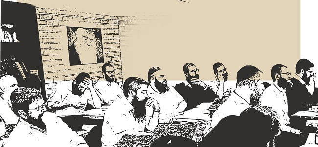

ישראל מעל
טכנולוגיה חדשנית, מצגות מרהיבות, מולטי מדיה, חוברות סיכומים צבעוניות ומבוארות ושלל עזרי לימוד חדשניים ומקוריים, כך חולל אברך צעיר בשנות העשרים לחייו את מהפכת לימודי ההלכה בעולם החב”די * הכירו את הרב ישראל מעל האיש מאחורי הרעיון והמכון שמכשיר בעלי בתים למבחני הסמכה לרבנות * ארבעים אנשי עסקים ובעלי בת

טכנולוגיה חדשנית, מצגות מרהיבות, מולטי מדיה, חוברות סיכומים צבעוניות ומבוארות ושלל עזרי לימוד חדשניים ומקוריים, כך חולל אברך צעיר בשנות העשרים לחייו את מהפכת לימודי ההלכה בעולם החב”די * הכירו את הרב ישראל מעל האיש מאחורי הרעיון והמכון שמכשיר בעלי בתים למבחני הסמכה לרבנות * ארבעים אנשי עסקים ובעלי בתים בוגרי המחזור הראשון של ‘מכון למען ילמדו’ הוסמכו לאחרונה לרבנות ומאה וחמישים תלמידים ביניהם שלוחים, אנשי עסקים, בעלי בתים ורבני בתי כנסת פתחו את שנת הלימודים הנוכחית בשלשה סניפים ברחבי הארץ * הרב יוחנן גוראריה, הרב דב טברדוביץ והרב אפרים בוגרד המלווים את המכון: “סוד ההצלחה הוא בלימוד הלכה למעשה בצמוד לפסיקות אדמו”ר הזקן” * הכל על המיזם ההלכתי הגדול ומה שמאחוריו
מאת זלמן צרפתי

הרושם הראשוני כשנכנסים למרכז ‘למען ילמדו’ הוא של חברת הייטק. הלוגו באותיות זהב בולטות על קיר הכניסה, פינת הקפה עם מכונת האספרסו ומבחר המאפים לבחירה. המקום מעוצב בטוב טעם ומשרה אווירה של קידמה וטכנולוגיה. מחשבים, מקרנים, מצלמות וידיאו המקליטות את השיעור ומעבירות אותו בשידור חי באינטרנט, מערכת אינטראקטיבית לתקשורת עם השלוחים בחו”ל תלמידי המכון שמשתתפים בשיעורים און ליין, חוברות הלימוד והסיכומים המוגשים כולם ממותגים, צבעוניים ומרשימים.
האולם מתמלא בתלמידים הנרגשים. רובם שלוחים ורבני קהילות מרחבי הארץ, מקצתם אברכים שרואים עתידם ברבנות. הרב ישראל מעל מקבל את האורחים בחיוך רחב. בעוד ר’ פיני חבבו מנהל הפיתוח מתרוצץ, פותר תקלות של הרגע האחרון ברשת התקשורת. השלוחים מקבלים קלסר עב כרס, ובו החוברות שילוו את הקורס. הרב עדאל קידר עולה על הקתדרה, ניצב מאחורי הפודיום, מסך ענק נדלק מאחורי גבו. פיני מסמן שהכל עובד, והשיעור מתחיל.
מהפכת ההלכה
הבשורה של מכון ‘למען ילמדו’ היא לא פחות ממהפכה. וזו לא קלישאה. מדובר על בית ספר ללימודי הלכה בדגש על הסמכה לרבנות. אבל בשונה ממכוני הסמיכה המפוזרים בעולם, התלמידים אינם בחורים אחרי קבוצה, אלא אנ”ש, אנשי עסקים ובעלי מלאכה, שלוחים ופעילים עם הציבור שהמשותף לכולם הוא - רצונם לקיים את רצונו של הרבי להיות רב ולכל הפחות ‘רב בביתו’. מאה וחמישים איש התחילו את שנת הלימודים בקורסים השונים בתל אביב ובירושלים, השבוע התבשרנו על פתיחת סניף חדש בחיפה, והמספרים רק הולכים וגדלים.
הרעיון של הרב ישראל מעל ושותפיו לדרך הם מסוג הרעיונות שגורמים לך לתהות איך לא חשבו על זה קודם. “הרעיון הוא פשוט”, אומר הרב ישראל מעל יוזם ומנהל המכון. “ידוע שהרבי רוצה שכל חסיד יהיה בקי בהלכה, באינספור הזדמנויות מדבר הרבי במיוחד על לימוד ההלכות הנצרכות למעשה וזה בנוסף לבקשה של הרבי מהבחורים שישתדלו לסיים את לימודי הסמיכה טרם נישואיהם. לאו דווקא במטרה לפתח משרה רבנית, אלא בעיקר שכל אחד יוכל להיות רב בביתו ולפסוק לכל הפחות בהלכות בסיסיות.
בפועל, לא לכולם זה התאפשר ובפרט אצל בעלי תשובה. הרעיון שלנו אומר שלעולם לא מאוחר כדי להתחיל ללמוד וצריך רק להנגיש את החומר בצורה ממוקדת, ברורה ושווה לכל נפש מחד ומאידך שכוללת את כל היסודות והתהליכים הנדרשים לצורך קבלת סמיכה לרבנות. וזה מה שעשינו”.
שולטים בחומר יותר מבחורי ישיבה
“כל פעם שאני בא לבחון את האברכים של מכון למען ילמדו אני בהתרגשות מהידע העצום שמגלים התלמידים”, אומר הרב יוחנן גוראריה רב העיר חולון. “אני בוחן הרבה בחורים לסמיכה, תמימים שלמדו בישיבה, ויש להם ניסיון לימודי והרבה זמן להשקיע. ולמרות זאת, אפשר לומר שלמרות שמדובר באנ”ש, באנשי עסקים שעובדים לפרנסתם, תלמידי מכון ‘למען ילמדו’ שלטו בחומר אף יותר מבחורי הישיבה.
הרב גוראריה מלווה את המכון מיום היווסדו והוא גם הרב הבוחן שמסמיך את התלמידים. לאחרונה נערך בישיבת חב”ד ברמת אביב טקס חגיגי שבו הוענקו תעודות סמיכה לרבנות לארבעים הרבנים שסיימו את המחזור הראשון. בטקס השתתפו בכירי רבני חב”ד ובראשם הרב גוראריה. את עיקר נאומו בטקס הקדיש הרב גוראריה לדגש שהמכון שם על לימודים מעשיים ויישום הפרקטיקה בלימוד.
“סמיכה לרבנות זה כמו ללמוד רפואה”, אמר הרב גוראריה, “אי אפשר ללמוד רק תיאוריה ולקבל תעודה. נכון שהתעודה משקפת את הישגי התלמיד בלימוד, אבל חייבים ללמוד פרקטיקה. ובהלכה זו ההלכה למעשה, עד הפסקים האחרונים של רבני חב”ד בתחום. אני מסתובב בעולם כולו, אצל שלוחים, הם מקבלים פניות ממקורבים לחתן, שליח שלא למד את העניין לעומק, הלכה למעשה ממש, גם אם הוא תלמיד חכם גדול, גם אם הוא משפיע נהדר ומרביץ תורה עצום, יש לו בעיה להתעסק בחופה וקידושין וזו המומחיות של המכון הזה”.
מסימני הגאולה - גם זבולון, גם יששכר
מי שפרסה את חסותה ונתנה רוח גבית למיזם היא הישיבה ברמת אביב. “אין ספק שמכון למען ילמדו הוא אחד מסימני הגאולה”, אומר הרב חיים יוסף גינזבורג רב קהילת חב”ד ברמת אביב, שליח הרבי ויו”ר המוסדות. “כידוע, מאז ומתמיד הייתה החלוקה בין זבולון ליששכר, אך השיטה החדשנית והמיוחדת של המכון מאפשרת להיות גם “זבולון” וגם “יששכר” ולא סתם “יששכר” כי אם, בעל תעודת הסמכה.
מי שמוביל את הקו הלימודי ומרכז את כל התחום הוא הרב ישראל מעל. הרב מעל הוא הוגה הרעיון, מקים המכון ומי שעומד מאחוריו עד היום הזה. יש משהו מתעתע ברב ישראל מעל. שום דבר במראה בחור ישיבה העדין לא מסגיר את הכישרון המבריק בסיכום והסברה ואת שליטתו המוחלטת בחומר הלימודים. למרות היותו אברך צעיר, הוא עוסק בתחום כבר שנים ומאחוריו ניסיון עשיר בהגשת תלמידים לבחינות הסמכה לרבנות.
לא חוסכים באמצעים
את דרכו בהוראת ההלכה החל הרב מעל עוד בהיותו בחור, כשמונה על ידי השליח הרב מוטי ענתי לראש המכון לסמיכה בפלורידה כמחליפו של הרב שניאור כהן, מי שכיהן לפניו בתפקיד והשקיע רבות בתלמידים בשיעורים ובסיכומים. בעקבות הקשיים של התלמידים, כיצד להתמודד עם החומר הרב והמורכב, החליט הרב מעל לערוך חיבור ייחודי המתמצת ומסדר את כל החומר של איסור והיתר על בסיס המבחנים של הרב שניאור זלמן לאבקובסקי ראש הישיבה ב770. החוברת שנכתבה ונערכה ביצירתיות ובכשרון גדול, זכתה לתפוצה רחבה בקרב הלומדים והנבחנים לסמיכה, החוברת שמודפסת מידי שנה במהדורה חדשה ומתוקנת בהסכמת רבני חב”ד נתקבלה ככלי עזר בסיסי ויסודי ללימודי סמיכה.
לאחר נישואיו עמד הרב מעל בראש בית מדרש להוראה בבית חב”ד נאות אפקה בצפון תל אביב, שם למדו האברכים בשקידה את החומר למבחני הרבנות הראשית - היכל שלמה, ובמקביל המשיך ללמד ולהעביר בחורים במבחני הסמיכה, כאשר הוא מלווה אותם מהרגע הראשון ועד המבחן.
הרעיון להקמת המכון החל להבשיל בשלהי שנת תשע”ה, הרב מעל החל לבדוק לעומק את האפשרות לפתוח לראשונה כיתת לימוד בה ילמדו אנשי עמל ובעלי תשובה ויגשו לבחינת הסמכה לרבנות.
עם הרעיון המהפכני הזה ניגש הרב מעל אל ר’ זוהר יהושע מאנ”ש ברמת אביב שהפך למנהל הלוגיסטי של הפרוייקט. בהמשך הצטרף גם ר’ פיני חבבו כמנהל פיתוח וכבר בתחילת שנת הלימודים תשע”ו, בשנתו הראשונה של המכון הוא מנה 40 תלמידים.
“המטרה שלנו היא לתת לכל אברך חב”די שרוצה ללמוד תורה, את האפשרות לעשות זאת בפועל, אנחנו לא חוסכים בשום אמצעי שיכול לעזור”, אומר ר’ פיני חבבו מנהל הפיתוח במכון. “זהו, אין יותר תירוצים. אני לא יכול ללמוד, זה לא בשבילי, אני עסוק מאד, אני בקושי יודע לקרוא כתב רש”י, אף פעם לא למדתי במסגרת ישיבתית, בשביל ללמוד אני צריך מסגרת, כל התירוצים הללו נגמרו - אנחנו נותנים פתרון להכל”.
“מה שמניע אותנו זה רצונו של הרבי”, אומר הרב מעל “ידועה הוראתו של הרבי שכל בחור ילמד ויעשה סמיכה לפני החתונה, על מנת שבבוא הזמן ויקים בית נאמן בישראל, יהיה רב בעצמו ויוכל לנהל את הבית על פי השולחן ערוך, ומבלי צורך תמידי לגשת לרב על כל שאלה פשוטה המופיעה בכתובים. מטרת הקמת המכון הוא להשלים לכל אלו שלא הספיקו מאיזו סיבה שתהיה לעשות את המבחנים, להבחן ולקבל את תעודת הרב כרצון הרבי.
“חוץ מזה, זה לימוד התורה כפשוטו ממש, הרבי רוצה שכל אחד ואחד יקבע עיתים לתורה באופן קבוע ומסודר, עם דגש על לימוד הלכה והלכה למעשה, כי חסיד ירא שמים לא יכול לחיות כראוי ללא ידע אמיתי ונרחב בשולחן ערוך לכל הפחות בהלכות הנצרכות לחיי היום יום כמו איסור והיתר ושבת”.
סוד ההצלחה
כאמור, שנת הלימודים הראשונה במכון הסתיימה בהצלחה רבה. ארבעים התלמידים הראשונים, רובם אנשי עסקים מאנ”ש באזור גוש דן, נבחנו וגילו בקיאות מדהימה בחומר. המוניטין של המכון יצא למרחקים והחל ביקוש מכל רחבי הארץ לרישום לקורסים. “מגיעים אלינו תלמידים מן הצפון ומן הדרום. מרמת הגולן ועד דרום הנגב” אומר חבבו, “אנשים אלו יודעים שיש להם יום אחד בשבוע בו הם יוצאים מהבית, ונוסעים ללמוד תורה באמת. זה לא עוד שיעור בין מנחה למעריב שלפעמים קשה אפילו לזכור מה היה נושא השיעור, כאן מדובר בלימוד רציני וישיבתי ויחד עם זה מובן ומופשט היטב היטב ללא צורך בעבר ישיבתי”.
“אין תחליף בעולם לאופן הלימוד האותנטי” מבקש הרב מעל להדגיש, “מאז ומתמיד כיתתו יהודים את רגליהם ונסעו בכל העולם על מנת ללמוד תורה במקום הכי טוב להם. מסתבר שישנה מעלה בהתנתקות הזו. זה לא לימוד עצמי, ולא שיעורים ברשת, או ברכב תוך כדי נסיעה. עצם זה שהם מגיעים לכיתה, משאירים את הטלפון הסלולרי בצד, יושבים עם רב שמעביר את החומר וצוללים לעומקה של סוגיה, זה עושה את כל ההבדל”.
ארבעים נבחנים בשנה ראשונה, רובם מעל גיל 40 נטולי עבר ישיבתי ובכל זאת נבחנים כמו בחורים שיצאו ממכון סמיכה. מהו סוד ההצלחה של המכון?
“אפשר לחלק את זה לשניים”, אומר הרב מעל. ראשית, האוירה המיוחדת בה הקורסים מועברים - כיתה חדשנית, משוכללת ומאובזרת, ותחושה ביתית וחמימה, כשעל הכל מנצח ר’ זוהר יהושע שדואג למקום ולאווירה עד הפרטים הקטנים. שנית, איכות החומר המועבר - באמצעות מחלקת הוצאה לאור, המוציאה מידי שבוע חוברות לימוד ערוכות ומסודרות לכל שיעור ושיעור. צוות שלם ומקצועי עוסק בכתיבת השיעור ובעריכת טבלאות, סיכומים ושאר כלי עזר.
“אבל נראה שגולת הכותרת של מכון למען ילמדו הוא “שיטת הפרזנטציה” שיטת ההמחשה הלימודית המקובלת כיום במוסדות רבים. הרעיון, הוא המחשת הלמודים באמצעות מצגות הנערכות על ידי צוות מיוחד ומקצועי שעובד על הכנת החומרים.
“כל החומר הלימודי עובר בפיקוחו הצמוד ובהדרכתו של הגאון הרב דב טברדוביץ מכפר חב”ד, שמלווה את המכון מיום הווסדו. אנחנו כל הזמן שמים דגש על פסקי הלכה ברורים בכל המחלוקות בהלכות בשר בחלב ותערובות. דבר שכל מי שלמד סמיכה בשנים שעברו מבין את הצורך שהלימוד יעבור מיד לשלבי הלכה למעשה. במקומות שניתן הביא הרב טברדוביץ את פסקי אדמו”ר הזקן מהלכות פסח וכדומה, ובמקום שלא מצאנו הכרעה ברורה בדברי אדה”ז, ניתנה הפסיקה על–פי כללי הפסיקה המקובלים בין פוסקי אנ”ש. למעשה, כמדומני שזו הפעם הראשונה שבה ניתן ללמוד מחלוקות עמוקות, ולצאת עם פסק הלכה ברור ע”פ שיטת חב”ד” מסכם הרב מעל.
מסלול היכל שלמה
במקביל למסלול הסמיכה הבסיסי, בעקבות פניות רבות של שלוחים מכל רחבי הארץ, שביקשו ללמוד ללימודי סמיכה המוכרת על ידי הרבנות, הוחלט בהנהלת המכון על פתיחת מסלול נוסף - קורס היכל שלמה, המתקיים באותה מתכונת של הסמיכה הרגילה, פעם בשבוע בכיתת המכון.
המוטו של מכון למען ילמדו הוא לתת את המיטב לתלמידים. זו הסיבה שהחליטו בהנהלת המרכז לצרף לצוות המרצים למסלול היכל שלמה - את הרב עדאל קידר, אברך חב”די למדן ומופלג בעל בקיאות נדירה בחומר של מבחני הרבנות הראשית. הרב קידר ערך את שו”ת ‘היכל שלמה’ שחיבר אביו, ואף הוסיף והשלים את החיבור שהפך לנפוץ מאוד בציבור הליטאי ובמיוחד בין תלמידיו.
מעבר לכך, צוות המכון מלווה את השלוחים לאורך כל הדרך, בכל תקופה נערך מבחן עונתי על החומר הנלמד, המבחנים מותאמים על פי מבחני היכל שלמה ונבדקים היטב, על מנת לוודאות שהתלמיד יודע כיצד לכתוב את התשובות באופן הנכון. “זה הכרחי”, אומר הרב מעל. “כי מלבד לימוד החומר צריך לדעת מה צריך לזכור וכיצד לכתוב את התשובות במבחני הרבנות, הרבה תלמידים לומדים את החומר היטב אך בשעת אמת אינם מצליחים לקלוע ולרצות את דעת הבודק”.
גם הרב אפרים בוגרד דיין בבית דין רבני חב”ד העוסק בהכנת ובבדיקת המבחנים לרבנות הראשית הביע התפעלותו מחומר הלימודים ומרמת המבחנים הפנימיים.
“החיים שלי השתנו”
“לפני כחודש נפתח מסלול חדש ומיוחד במינו להלכות שבת”, מספר הרב מעל, “המסלול הזה מיועד במיוחד עבור חסידי חב”ד ומתמקד בצורה יוצאת דופן בלימוד הלכות שבת הלכה למעשה מבוסס כל כולו על שו”ע אדה”ז, ישנם ב”ה ספרים רבים בשוק על הלכות שבת, אך הייחודיות של מסלול זה הוא שהחומר כולו מבוסס על אדה”ז ומדויק ומפורט באופן יסודי ומקיף, ושהחומר מובא בצורה של פסקי הלכות “הלכה למעשה”. גם הוא כמובן מועבר באמצעות שיטת הפרזנטציה החדשנית של המכון ובליווי טבלאות, תרשימים, סיכומים והמחשות.
החומר בהלכות שבת נכתב על–ידי צוות של תלמידי חכמים, ומוגה הלכתית על ידי הרב חיים קיז’נר דיין ומו”צ בעמנואל, שעבר “שימוש” אצל גדול הפוסקים הרב שמואל וואזנר. “עקב כמות השאלות ההלכתיות המתעוררות בשעת הלימוד בהלכות שבת, חשוב מאד שהמרצה המעביר את הקורס יהיה בעל ידע נרחב וסמכות רבנית על מנת שיוכל לענות לתלמידים על שאלותיהם וההשלכות הפרקטיות של החומר הנלמד בחיי היום יום”, אומר הרב מעל. “משום כך בחרנו ברב קיז’נר שהוא רב צעיר ובעל ידע עצום בהלכות שבת”.
“מאז הקורס אפשר לומר שהחיים שלי השתנו”, אומר ר’ אלון שריקי אחד התלמידים בקורס. “החומר הנלמד מובן ומונח אצלי בראש היטב, וכאשר באמצע השבת מתעוררת בעיה או שאלה, פתאום אני יכול לשלוף את התשובה והפסק ההלכתי על פי שלחן ערוך אדמו”ר הזקן. זה כמובן משפיע על הילדים, על כל המשפחה”.
“כל אחד יודע ששבת זה הלכות מסובכות”, אמר הרב גוראריה בטקס הסיום, “יש כל כך הרבה הלכות שבת, הרבי אמר שלהיות רב זה לא רק רב קהילה, אלא להיות רב בבית! לדעת מה לומר לאשה, להגיד לילדים איך להתנהג, יש לי קהילה ושואלים אותי האם מותר להוריד את הסיר האם מותר להניח את הסיר, מה הדין עם המיקרוגל ויש כל כך הרבה הלכות, לכן הנושא הבא שהולכים ללמוד כאן במכון זה הלכות שבת, הלכות שבת זה עולם בפני עצמו, ולכן אני מייעץ לכל אלו שמצטרפים לתלמידי המכון ללמוד הלכות שבת, והייתי אומר שמי שיודע את הלכות שבת יודע את כל התורה כולה”.
החזון - סניפים בכל הארץ
האם יש תכניות לעתיד?
“כמובן. החזון שלנו הוא לפתוח סניפים וכיתות לימוד בכל קהילות אנ”ש בארץ ישראל. כרגע יש לנו סניפים בתל אביב בירושלים ובחיפה, בשלשתם הכיתות מאוכלסות בכל שלושת המסלולים. בימים אלו ממש אנו עובדים על פתיחת עוד שתי כיתות לימוד בלוד ובנחלת הר חב”ד, כך שגם התירוץ של מרחק גיאוגרפי לא יהיה.
“מעבר לזה יש לנו תכניות לפתוח קורסים מקצועיים בכל נושאי ההלכה, הרחבת והוספת מסלולים חדשים בעוד נושאים אקטואלים וחשובים, ולהרחיב את תכניות הלימוד גם לישיבות קטנות ובתי ספר, עם תכניות מרתקות ומותאמות לגילאים אלו”. פורש הרב מעל את חזונו.
“הרבי רוצה שחסידים יהיו למדנים”, מסכם הרב בוגרד, “כשהרבי שלח מכתב לילד, הרב בירכו שיהיה חסיד ירא שמים ולמדן, כמו שגנב זה לא מי שיודע לגנוב, אלא מי שגונב ממש, כך למדן זה לא מי שיודע ללמוד אלא שלומד בפועל. ישנו סיפור על קהילה אמריקאית שמינו לעצמם רב חדש, ולאחר כמה ימים ניגש הגבאי לרב והודיע לו שהוא מפוטר, הרב שאל על מה ולמה? ענה הגבאי תפסנו אותך על חם יושב ולומד מתוך ספר, שאל הרב נו מה הבעיה? אנחנו רצינו רב שכבר למד את כל התורה ונהיה רב. לא רב שעדיין צריך לפתוח ספר וללמוד…
“כאשר שליח לומד תורה - ההשפעה שלו היא השפעה פנימית, כי היא באה בכח התורה”
הלימוד הוא חוויה
“כל אחד מאתנו למד ולומד תורה אבל האופן של הלימוד וההדגשה של הלימוד הוא באופן אחר לגמרי”, אומר ר’ יגאל קרן איש עסקים מאנ”ש הרצליה בעל מותג הפיאות ‘אסתי וויגס’”, אני זוכר בשיעורים הראשונים, כשהגעתי לשיעור אמרתי לעצמי, אוי ואבוי לאן הכנסתי את עצמי, כל כך קשה’ כל כך הרבה חומר’ כל הרבה דברים צריך לזכור, אבל כשמתייגעים הקב”ה עוזר.
הרב גוראריה אמר לנו במבחן הראשון, ‘אנחנו לא אמורים לזכור את הכל אבל האדם הלומד צריך להבין את השאלה, ולדעת איך לחפש את התשובה’, ואני חושב שזה בדיוק מה שלקחנו מהשנה הזאת, לדעת שיש שאלה, ומהי השאלה, והיכן לחפש את התשובה, ועוד יותר מזה אני חושב שזה פתח לנו חושים חדשים ונתן לנו תיאבון ללמוד עוד ועוד.
אני מבקש להודות לרב מעל ולר’ זוהר, שב”ה זכיתי להכיר אותם והם עושים עבודה נפלאה להנגיש את החומר בצורה נפלאה, כדי שהלימוד יהיה חוויה. פשוט נעים לבוא וללמוד, זה לא רק מקום בו מזינים את השכל, אלא מורגש אהבת ישראל וזה גם הזדמנות לומר תודה לרב גינזבורג, ולישיבה ולרב גוראריה, ואני ממליץ לכל מי שעוד לא הצטרף למכון - שיעשה זאת בזריזות” אומר קרן.